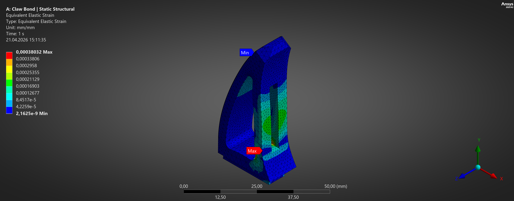
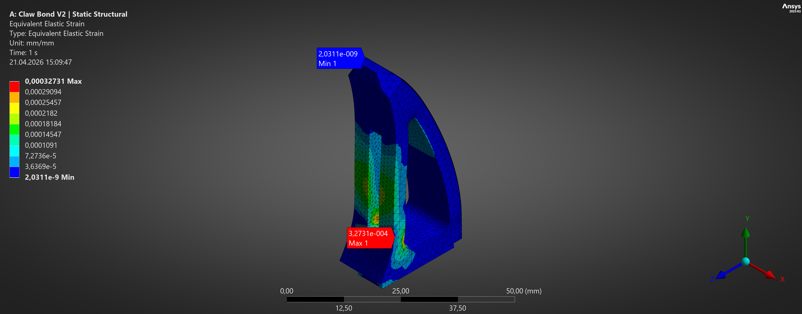
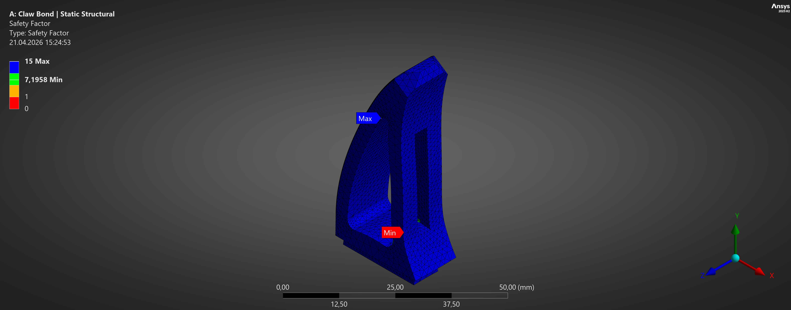
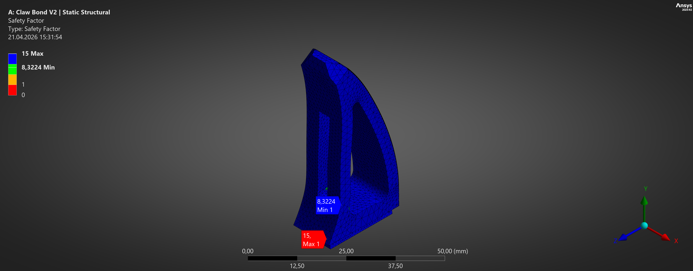
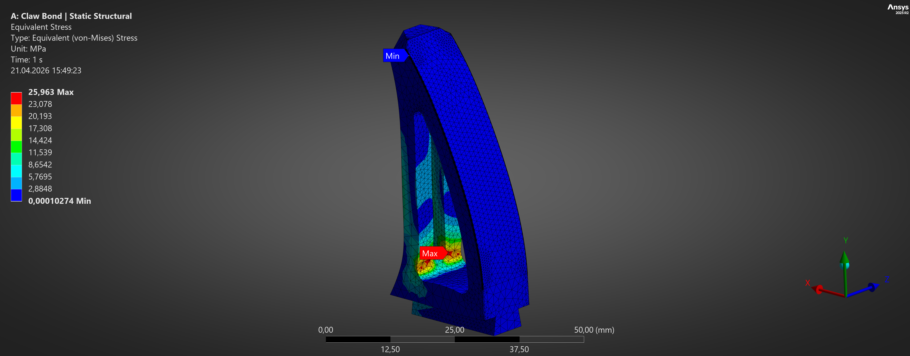
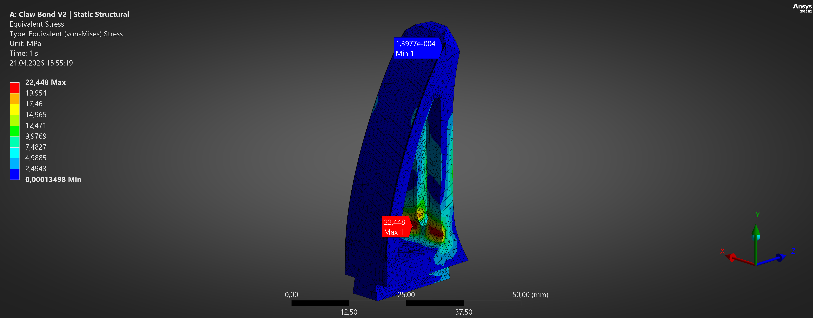
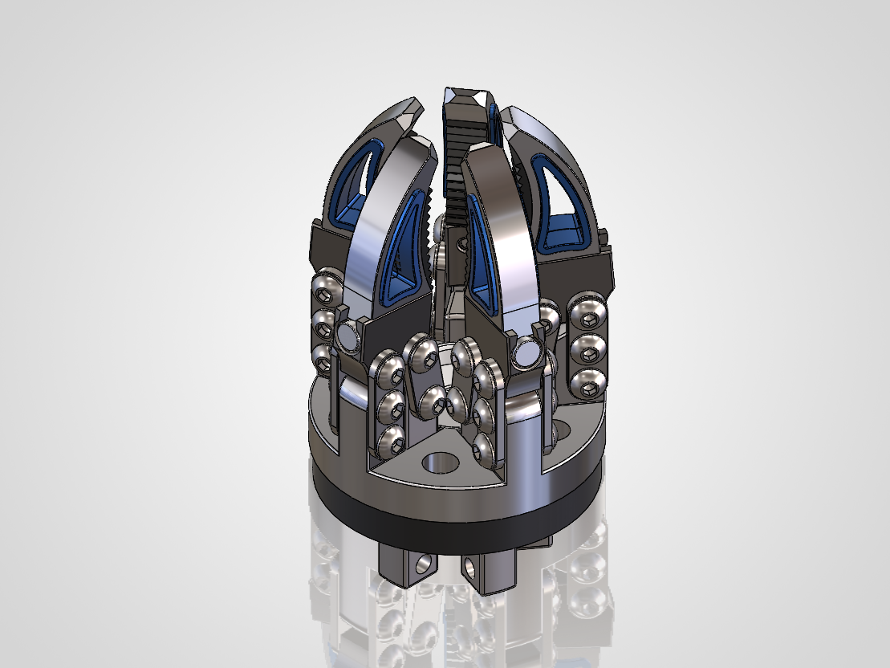

Local Stress Reduction of a Robotic Gripper Finger Using Static and Fatigue FEA

Project Overview
This project focused on the local structural refinement of a robotic gripper finger using static and fatigue finite element analysis. The baseline geometry was evaluated under a 300 N load, and the highest stress concentration was identified at the inner load-path root region. A second design iteration introduced local slot-corner relief fillets and increased the critical root fillet radius to smooth the stress flow. Compared with the baseline, the final design reduced peak von Mises stress by 13.5%, equivalent elastic strain by 13.9%, and total deformation by 3.2%. Fatigue analysis under zero-based cyclic loading (0–300 N) showed that both designs remained in the high-cycle regime, but the optimized version improved the minimum fatigue safety factor by 15.7%. The study shows how small local geometry refinements can improve structural response without changing the overall load case.

V1 Baseline

V2 Final Iteration


Tools: SolidWorks, ANSYS Mechanical
Reference Model: KR16-Type Gripper
Related Sectors: Industrial Automation & Robotics, End-of-Arm Tooling, Assembly Automation, Material Handling, Smart Manufacturing
Achievements
The final V2 design reduced the critical stress concentration and elastic strain while improving the fatigue safety margin under the same 300 N load case.
| Achievement | V1 | V2 | Change |
|---|---|---|---|
| Peak von Mises stress | 25.963 MPa | 22.448 MPa | -13.54% |
| Equivalent elastic strain | 0.00038032 | 0.00032731 | -13.94% |
| Total deformation | 0.008805 mm | 0.008524 mm | -3.19% |
| Directional deformation (Y) | 0.006646 mm | 0.006353 mm | -4.41% |
| Minimum fatigue safety factor | 7.1958 | 8.3224 | +15.66% |
The most important result was the reduction of the local stress concentration. V2 reduced peak von Mises stress by 13.54% and equivalent elastic strain by 13.94%, while increasing the minimum fatigue safety factor by 15.66%.
These improvements were achieved through small local geometry refinements without changing the overall loading concept or the global form of the finger.
Objective
In a robotic gripping application, repeated force transfer through the finger can create localized stress concentrations around geometric transitions, potentially reducing structural durability over repeated operating cycles.
The aim of the study was to reduce stress concentration in the critical root region of the gripper finger, lower elastic strain, and improve fatigue behavior under the same loading and boundary conditions. The focus was not on changing the global form of the part, but on refining a few local geometric transitions along the load path.

Scope and Limitation
This study focused on local geometric refinement of the primary load-bearing finger body under a defined static load case. Full assembly-level analysis, including fully reworked mating components and dynamic loading, is outside the scope of this iteration.

Model and Analysis Setup
The part material was defined as Aluminum 6061-T6. Structural performance was evaluated in ANSYS using both Static Structural and Stress-Life Fatigue analysis. A 300 N load was applied to the inner load-face region to represent force transfer through the finger during a representative gripping load case. The base interface was fixed to represent the structural restraint provided by the gripper body. The same loading and support conditions were maintained for both design versions to ensure a direct comparison. Fatigue was assessed using zero-based cyclic loading (0 → 300 N → 0) with Goodman mean stress correction and Equivalent (von-Mises) stress as the fatigue stress component.

Analysis Setup
| Item | Value |
|---|---|
| Material | Aluminum 6061-T6 |
| Analyzed part | Robotic gripper finger main body |
| Optimized part | Main finger body only |
| Support condition | Fixed support at the base interface |
| Load condition | 300 N static load |
| Load application | Inner slot load-face region |
| Analyses | Static Structural + Fatigue |
| Mesh strategy | 2 mm global mesh, 1 mm local sizing at critical regions, Span Angle Center: Fine, Smoothing: High |
Mesh Convergence Study
To assess the mesh sensitivity of the baseline-to-optimized comparison, three mesh configurations were tested on both the V1 and V2 geometries. In V1, the sharp edge at the load-application site produced a stress singularity, creating a non-physical stress concentration that increases indefinitely with mesh refinement.
| Mesh | Global / Local Size | V1 Peak Stress | V2 Peak Stress | Stress Reduction | V1 Total Deformation | V2 Total Deformation | Deformation Reduction |
|---|---|---|---|---|---|---|---|
| Coarse | 4 mm / 2 mm | 22.897 MPa | 20.396 MPa | -10.92% | 0.008567 mm | 0.0082804 mm | -3.35% |
| Medium | 2 mm / 1 mm | 25.597 MPa | 22.151 MPa | -13.46% | 0.0087984 mm | 0.0085148 mm | -3.22% |
| Fine | 1 mm / 0.5 mm | 29.204 MPa | 24.035 MPa | -17.70% | 0.0088886 mm | 0.0086021 mm | -3.22% |
A stress sensitivity of ~8.5% was observed between the medium and fine mesh configurations in V2. Since the primary V1 and V2 analyses were performed using identical mesh settings, the baseline-to-optimized comparison was carried out on a consistent numerical basis. Across all three mesh levels, V2 produced lower peak stress and lower total deformation than V1. The supplementary mesh sensitivity check also showed that V2 produced a more stable stress response under refinement than the singularity-prone V1 geometry. Total deformation showed good convergence across all three configurations, with a variation below 5%.
Design Iteration
V1 – Baseline
The first version was the original finger geometry.
V2 – Final Iteration
Two local geometry refinements were introduced in the final version. R2.0 mm fillets were added to the two lower slot corners. The critical inner root fillet was increased from approximately R2.03 mm to R2.5 mm, which was the smallest radius that provided clear stress relief at the hotspot without conflicting with the adjacent slot geometry constraints. These modifications were selected to smooth the local load path, reduce abrupt stress transitions, and relieve the hotspot identified in the baseline analysis.
V1 Baseline


V2 Final Iteration


Static Analysis Results
The redesigned geometry produced a measurable improvement under the same 300 N load case. Peak stress, equivalent elastic strain, and deformation all decreased in the final version.
Static Results Table
| Metric | V1 Baseline | V2 Final | Change |
|---|---|---|---|
| Equivalent Stress | 25.963 MPa | 22.448 MPa | -13.54% |
| Total Deformation | 0.008805 mm | 0.008524 mm | -3.19% |
| Directional Deformation (Y) | 0.006646 mm | 0.006353 mm | -4.41% |
| Equivalent Elastic Strain | 0.00038032 | 0.00032731 | -13.94% |
The final V2 redesign reduced peak von Mises stress and equivalent elastic strain while also slightly decreasing deformation under the same 300 N load case. Although both versions remained in a high-cycle fatigue range of approximately 1e8 cycles, V2 increased the minimum fatigue safety factor by about 15.7%, making it the stronger final design candidate.
V1 Baseline Equivalent (von-Mises) Stress Result
V2 Final Equivalent (von-Mises) Stress Result
V1 Baseline Equivalent Elastic Strain Result

V2 Final Elastic Strain Result

Fatigue Analysis Results
Fatigue behaviour was evaluated using zero-based cyclic loading between 0 N and 300 N. Both versions remained in the high-cycle regime, so the difference between them did not appear strongly in the life and damage plots. The clearer distinction appeared in the fatigue safety factor.
Fatigue Results Table
| Metric | V1 | V2 |
|---|---|---|
| Estimated Life | 1e8 cycles | 1e8 cycles |
| Damage @ 1e6 cycles | 0.01 | 0.01 |
| Damage @ 1e8 cycles | 1.0 | 1.0 |
| Minimum Fatigue Safety Factor | 7.1958 | 8.3224 |
The fatigue results indicate that both geometries operate in a high-cycle regime at the selected load level. However, the final design improved the minimum fatigue safety factor by approximately 15.66%, which supports the structural improvements already observed in the static analysis.
V1 Baseline Fatigue Safety Factor Result

V2 Final Fatigue Safety Factor Result

Discussion
The baseline design was not weak. Even the original geometry already showed a high fatigue life under the selected loading scenario. For that reason, the redesign did not create a significant change in predicted life or damage. Instead, the benefit of the redesign was seen in the local stress redistribution. The critical hotspot was relieved, peak stress dropped, strain dropped, and the fatigue safety margin increased. The geometry was not completely changed. Instead, a few local transitions were improved, which resulted in a measurable improvement while preserving the original loading concept.
V1 Baseline Stress Hotspot

V2 Final Stress Hotspot

Note. Both plots are shown with individually scaled contours. Comparison should be interpreted using the reported maximum stress values.
Final Technical Conclusion
Small local geometry changes improved the structural response under the same load, reducing stress, strain, and deformation while increasing the fatigue safety factor.

About
Mechanical engineer focused on mechanical design, CAE, and engineering analysis. This portfolio showcases selected projects in FEA, simulation, optimization, and mechanical design, with applications in manufacturing, automation, and robotics.
Skills
Tools
SolidWorks Ansys Python VBA ArduinoCore Areas
Mechanical Design CAE FEA Engineering Analysis OptimizationRelated Areas
Automation AI Applications RoboticsResume / LinkedIn / Contact
Resume: Taylan Daldal
LinkedIn: linkedin.com/in/taylandaldal
Email: daldaltaylan@gmail.com